Standard Algorithms at Advanced Higher
The three Higher algorithms (linear search, find min/max, count occurrences) are replaced by three new ones: binary search, bubble sort and insertion sort. You must be able to describe, exemplify and implement all three — and just as importantly, discuss their advantages, disadvantages and efficiency. Exam questions regularly show you a garbled version and ask you to spot the error, or ask why one algorithm beats another for a given problem, so understanding how they work matters more than memorising lines.
Both sorts below sort into ascending order; with small changes (flip the comparison) they sort descending.
Key Terms
Binary Search
A binary search finds a value by continually halving a sorted list until the target is, or is not, found. It keeps three markers: low, high and mid — initially the first element, the last element, and the midpoint between them. Each iteration makes one of three decisions:
- If the middle value equals the target — found, stop;
- If the middle value is larger than the target — the target must be in the lower half, so
high = mid − 1; - If the middle value is smaller — the target must be in the upper half, so
low = mid + 1.
The loop repeats while the target is not found and low <= high — if low passes high, the target is not in the list.
FUNCTION binary_search(list, target) RETURNS BOOLEAN
DECLARE low INITIALLY 0
DECLARE high INITIALLY length(list) - 1
DECLARE mid INITIALLY 0
DECLARE found INITIALLY FALSE
WHILE NOT found AND low <= high
SET mid TO (low + high) / 2
IF target = list[mid] THEN
SET found TO TRUE
ELSE IF target > list[mid] THEN
SET low TO mid + 1
ELSE
SET high TO mid - 1
END IF
END WHILE
RETURN found
END FUNCTIONdef binary_search(items, target):
low = 0
high = len(items) - 1
found = False
while not found and low <= high:
mid = (low + high) // 2
if target == items[mid]:
found = True
elif target > items[mid]:
low = mid + 1
else:
high = mid - 1
return foundEfficiency of binary search
- ✅ Each comparison halves the remaining search area — 1 000 items need at most ~10 comparisons; 1 000 000 need at most ~20. A linear search averages half the list every time.
- ❌ The list must already be sorted — if it isn't, the cost of sorting first must be counted. For a single search of unsorted data, a linear search is actually the better choice.
- ❌ For very short lists the overhead isn't worth it — a linear search is simpler and just as fast.
Binary Search Visualiser
Placeholder for a visualiser: choose a target, then step through low/mid/high moving across a sorted bar of values, with a live comparison counter next to a linear search doing the same job.
Bubble Sort
A bubble sort continually swaps values in adjacent elements until the entire list is in order. After one pass through the array, the largest value has always "bubbled" to the end; after two passes the second-largest is in place, and so on. Two refinements make it respectable:
- the swapped flag — if a whole pass completes with no swaps, the list is sorted and the outer loop stops early;
- shrinking the pass — each pass fixes one more value at the end, so the inner loop can run one element shorter each time (
n = n − 1).
PROCEDURE bubble_sort(list)
DECLARE n INITIALLY length(list)
DECLARE swapped INITIALLY TRUE
WHILE swapped
SET swapped TO FALSE
FOR i = 0 TO n - 2 DO
IF list[i] > list[i+1] THEN
SET temp TO list[i]
SET list[i] TO list[i+1]
SET list[i+1] TO temp
SET swapped TO TRUE
END IF
END FOR
SET n TO n - 1
END WHILE
END PROCEDUREdef bubble_sort(items):
n = len(items)
swapped = True
while swapped:
swapped = False
for i in range(n - 1):
if items[i] > items[i + 1]:
items[i], items[i + 1] = items[i + 1], items[i]
swapped = True
n = n - 1Compare 45 & 23 → swap → [23, 45, 99, 7]. Compare 45 & 99 → no swap. Compare 99 & 7 → swap → [23, 45, 7, 99]. The largest value (99) has bubbled to the end after one pass — and swapped is TRUE, so another pass is needed.
Efficiency of bubble sort
- ✅ Simple to implement and to trace — and with the swapped flag, an already-sorted list is detected in a single pass (its best case).
- ❌ In general it is inefficient: values move only one position per pass, so a value far from its final place needs many passes, and nearly every pass re-compares the whole unsorted region. For n items the worst case is roughly n passes of n comparisons.
Insertion Sort
An insertion sort traverses the array from the second element to the last. Each element is stored in a temporary variable, then compared against the elements before it, working backwards: every larger value is copied one place to the right, and when a smaller value (or the start of the list) is reached, the temporary value is copied into the gap. Everything to the left of the current element is always already sorted — think of how you sort playing cards in your hand.
PROCEDURE insertion_sort(list)
DECLARE value INITIALLY 0
DECLARE index INITIALLY 0
FOR i = 1 TO length(list) - 1 DO
SET value TO list[i]
SET index TO i
WHILE (index > 0) AND (value < list[index - 1]) DO
SET list[index] TO list[index - 1]
SET index TO index - 1
END WHILE
SET list[index] TO value
END FOR
END PROCEDUREdef insertion_sort(items):
for i in range(1, len(items)):
value = items[i]
index = i
while index > 0 and value < items[index - 1]:
items[index] = items[index - 1]
index = index - 1
items[index] = valuei = 1: temp = 23. 45 > 23 so 45 copies right → [45, 45, 99, 7]; start reached, 23 drops in → [23, 45, 99, 7].
i = 2: temp = 99. 45 < 99 — already in place, no copies → [23, 45, 99, 7].
i = 3: temp = 7. 99, 45, 23 all copy right; start reached, 7 drops into index 0 → [7, 23, 45, 99]. Sorted.
Efficiency of insertion sort
- ✅ Generally more efficient than bubble sort: values shift (one copy) rather than swap (three assignments), and the inner loop stops as soon as the insertion point is found rather than comparing the whole region.
- ✅ Excellent on nearly-sorted data — each element barely moves.
- ❌ Still a comparison sort with roughly n²-style growth on random data — for very large lists, neither of the Advanced Higher sorts is what real systems use.
Sort Race — Bubble vs Insertion
Placeholder for an animation: the same shuffled list sorted side by side by bubble sort and insertion sort, with live counters for comparisons and swaps/shifts — and a "nearly sorted" preset to show why the swapped flag and early-exit inner loop matter.
Comparing the Algorithms
| Algorithm | Advantages | Disadvantages / inefficiencies |
|---|---|---|
| Binary search | Halves the search area each comparison — dramatically fewer comparisons than linear search on large lists | Requires the list to be sorted first; overkill for small lists |
| Bubble sort | Simple; swapped flag detects an already-sorted list in one pass | Values move one position per pass — many passes and many swaps on random data; each swap is three assignments |
| Insertion sort | Shifts instead of swaps; inner loop exits early; very fast on nearly-sorted data | Still compares against many elements on random data; shifting is costly when elements belong near the start |
Worked Examples
Attempt each question yourself first, then expand to check your reasoning against the marking instructions.
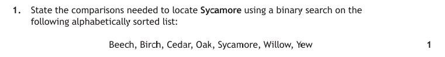
Approach: identify which algorithm the code implements from its shape — low/high/mid markers mean binary search; adjacent comparisons with a temp swap mean bubble sort; a backwards inner while-loop means insertion sort. Then trace with the values given.
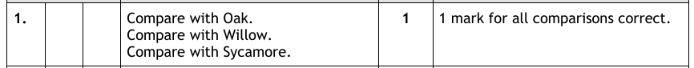
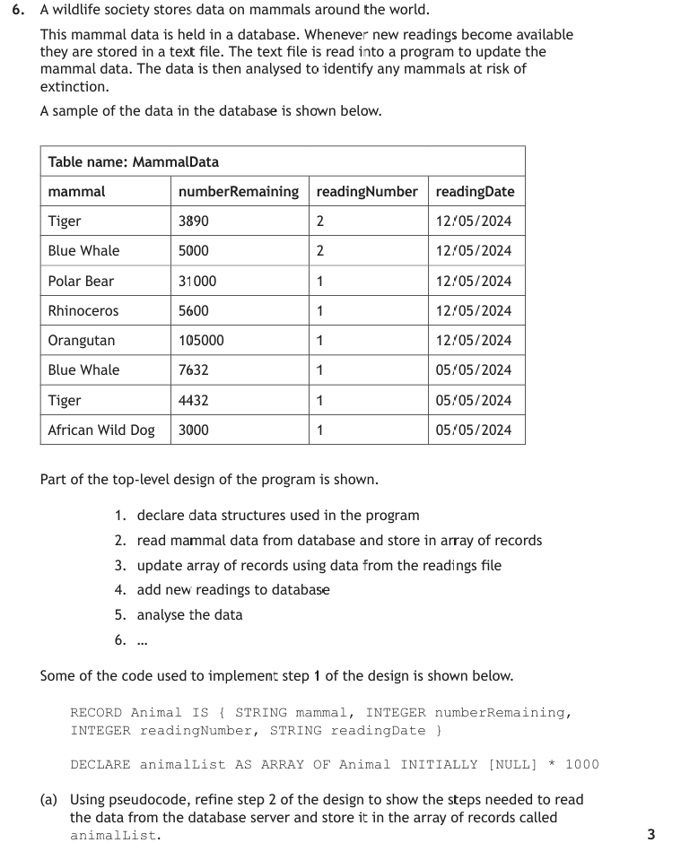
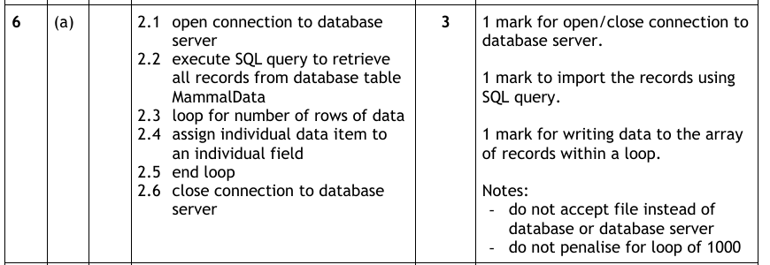
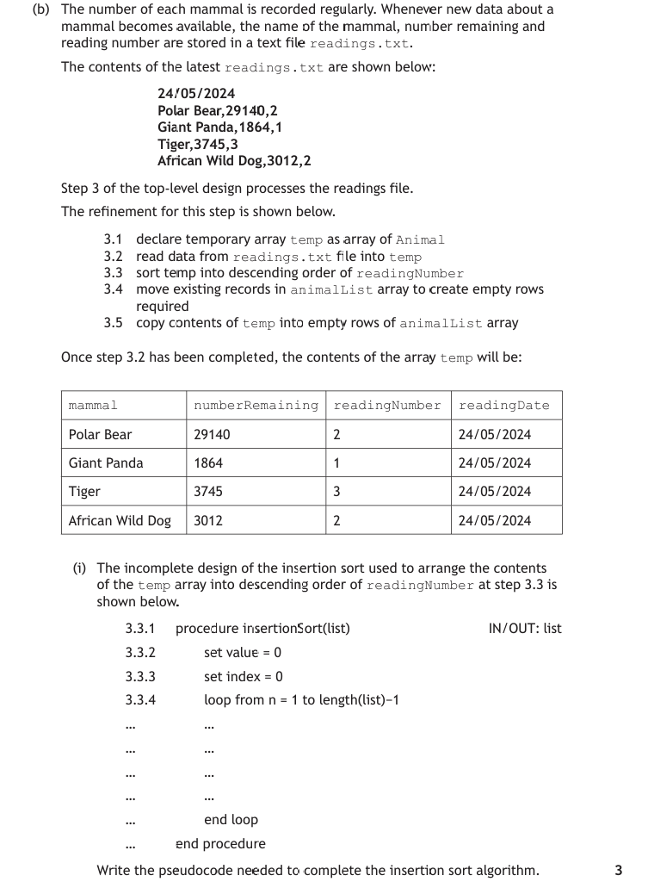
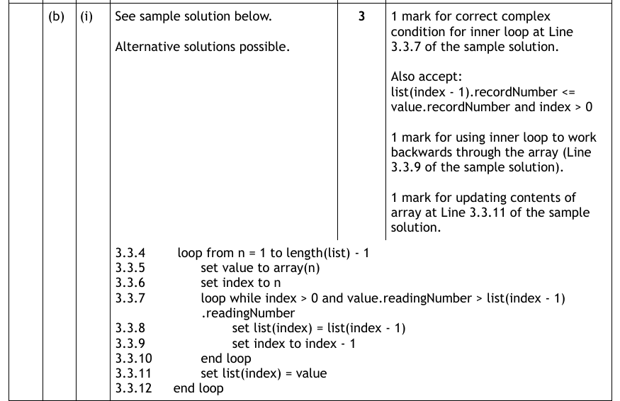
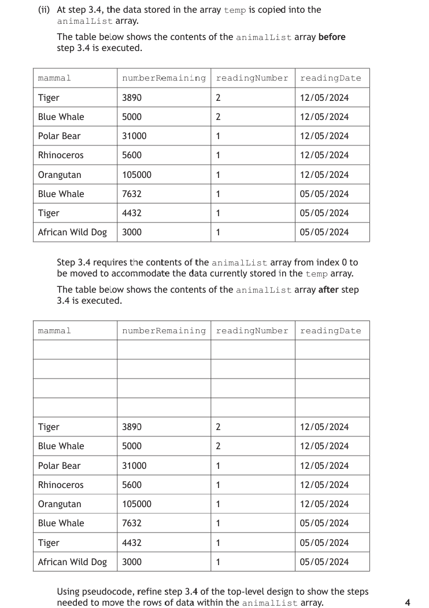
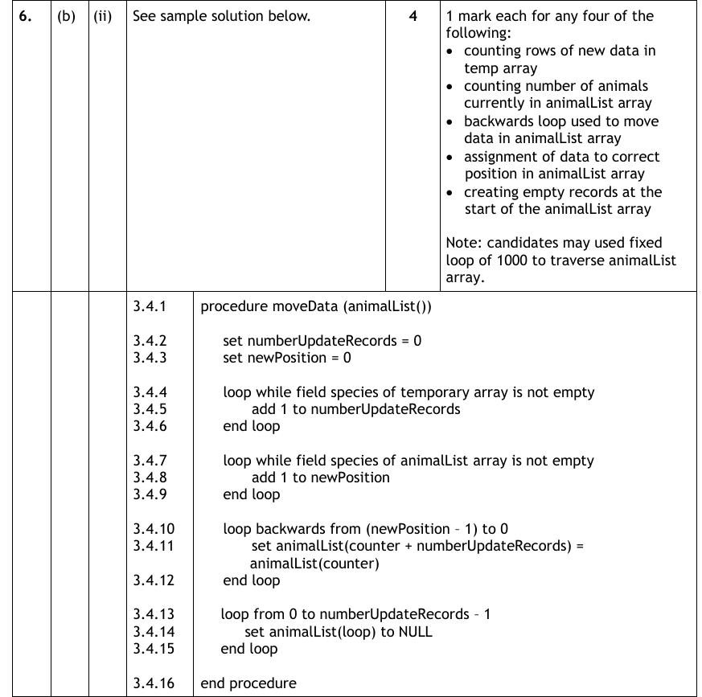
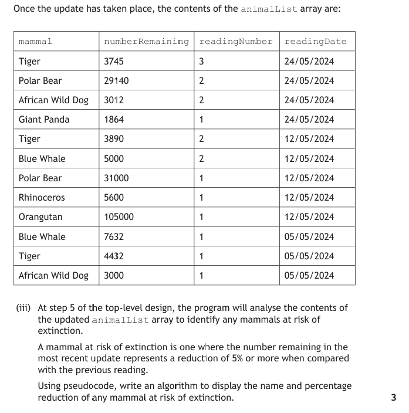
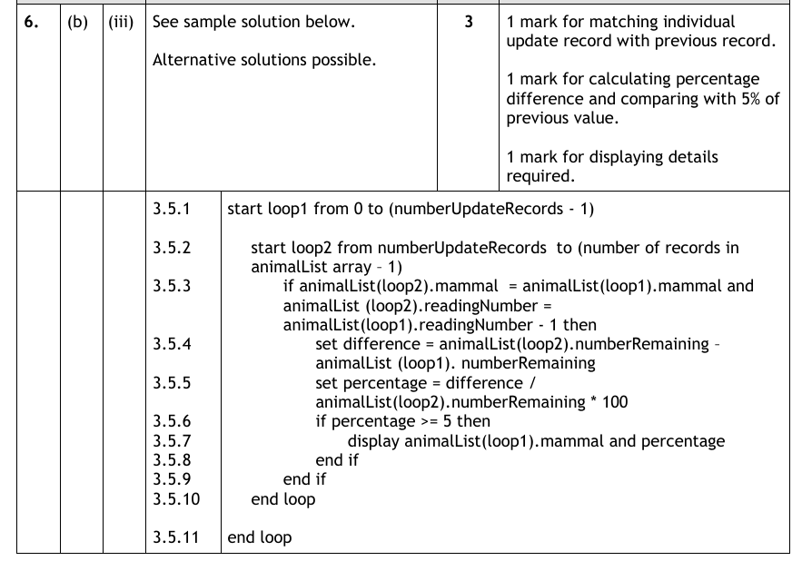
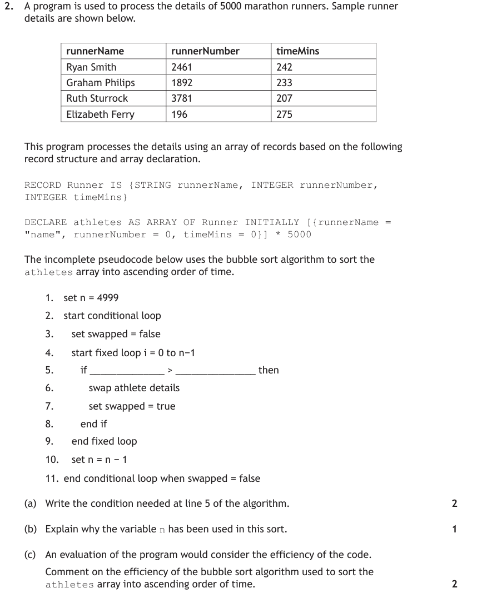
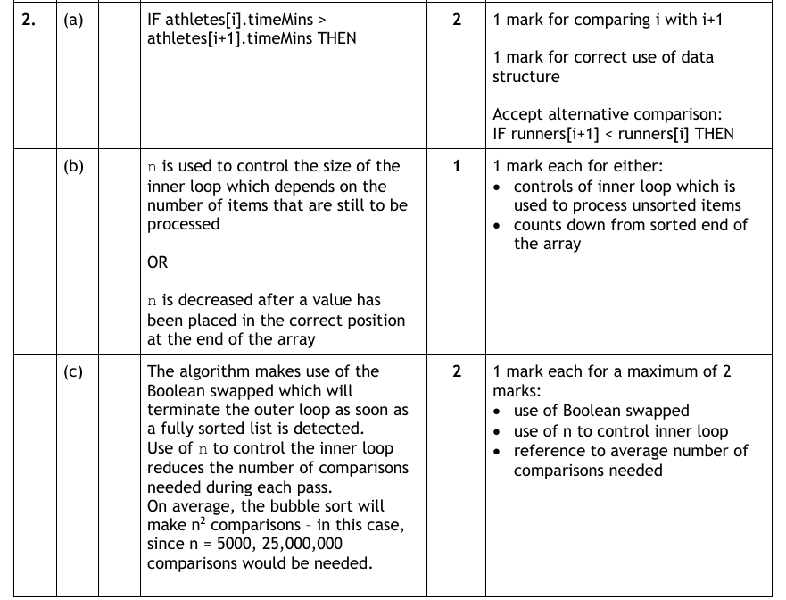
Test Yourself
Attempt each question first, then expand the marking instructions to check your answer.
A sorted array holds: [2, 5, 8, 10, 11, 14, 17, 25, 30] (indices 0–8). A binary search looks for the target 8.
State the values of mid checked, in order, until the target is found. (2 marks)
Marking Instructions
- First check: low = 0, high = 8 → mid = 4 → value 11. 11 > 8 so high = 3. (1 mark)
- Second check: low = 0, high = 3 → mid = 1 → value 5. 5 < 8 so low = 2. Third check: mid = 2 → value 8 — found. (1 mark)
Explain the purpose of the boolean variable swapped in the bubble sort algorithm, and describe the situation in which it improves efficiency the most. (2 marks)
Marking Instructions
- If a complete pass makes no swaps, the list must already be in order, so the flag ends the conditional loop without further passes. (1 mark)
- Greatest benefit when the list is already sorted (or nearly sorted) — the sort finishes after a single pass instead of continuing pointlessly. (1 mark)
A program stores 500 000 sorted membership numbers and must check thousands of numbers against the list every day. Justify which search algorithm should be used. (2 marks)
Marking Instructions
- Binary search — the data is already sorted, which is its precondition. (1 mark)
- Each comparison halves the search area, so each lookup takes at most ~19 comparisons instead of up to 500 000 with a linear search — a huge saving repeated thousands of times a day. (1 mark)